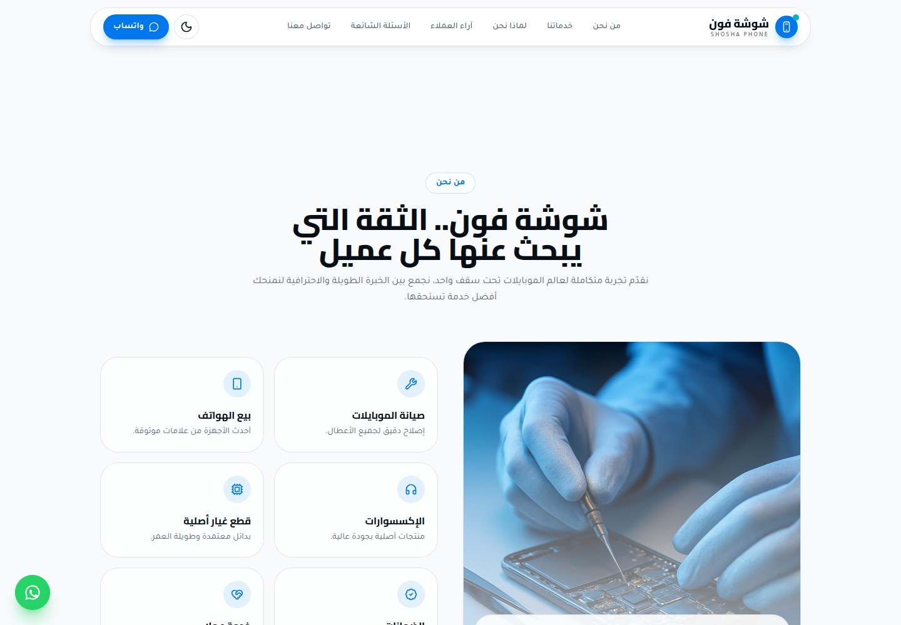
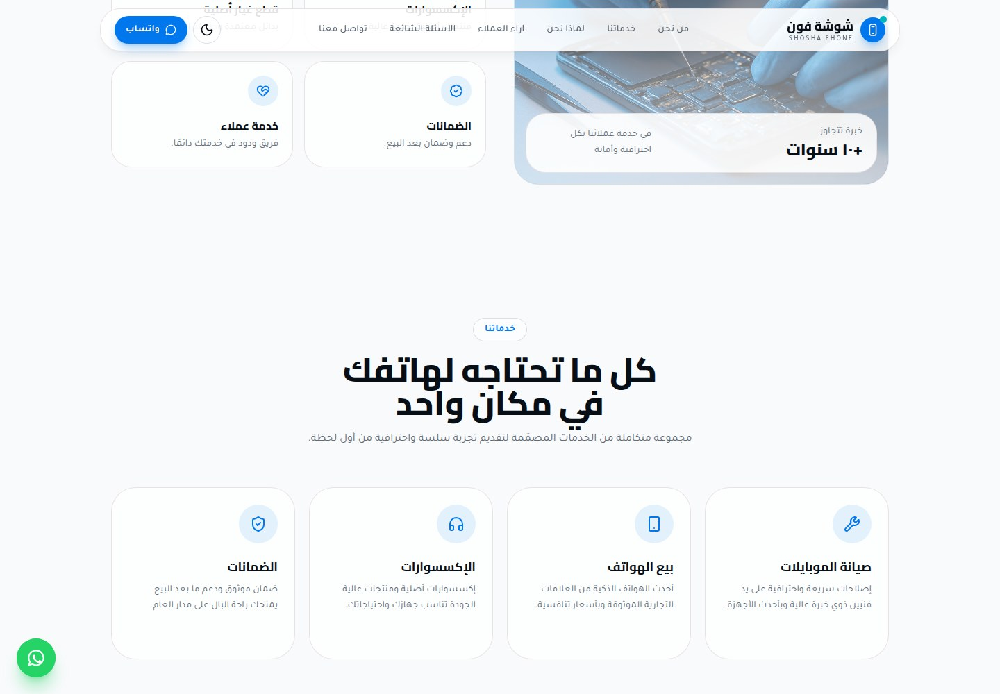
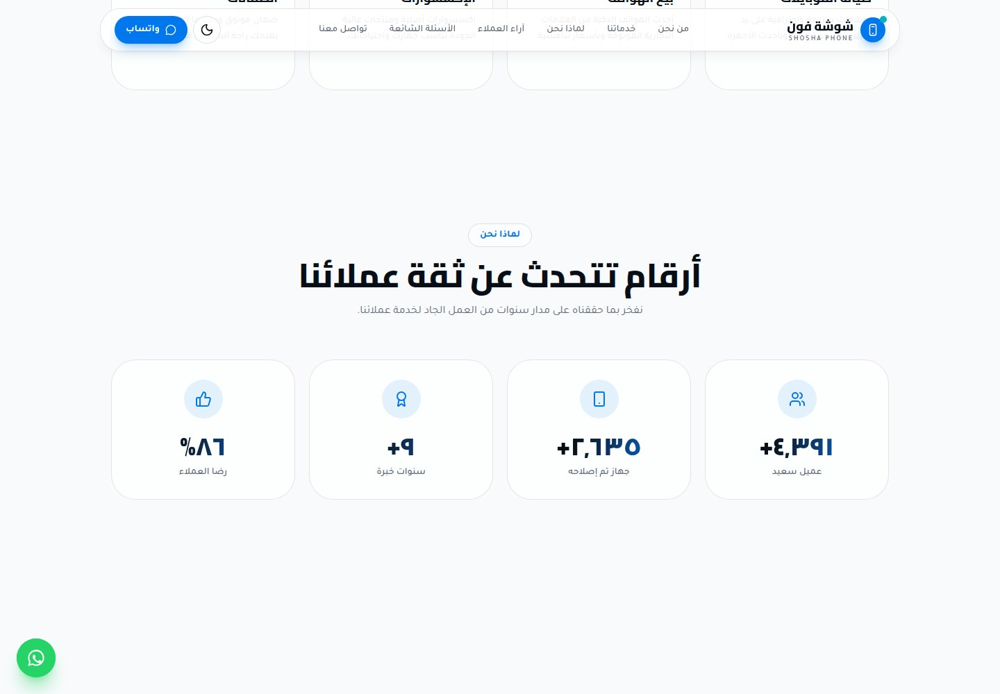
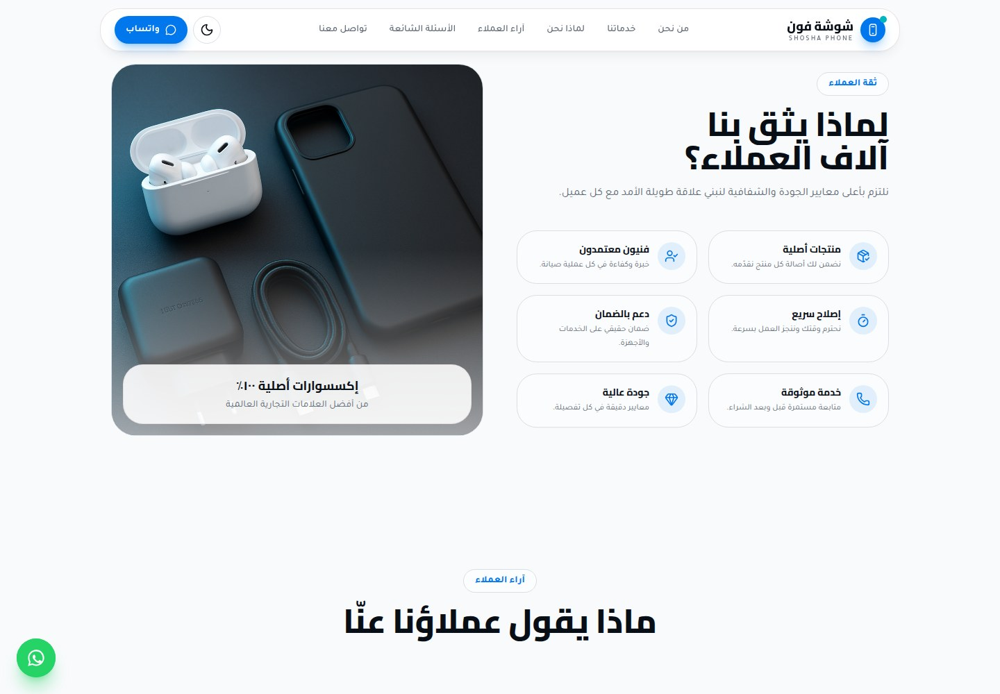
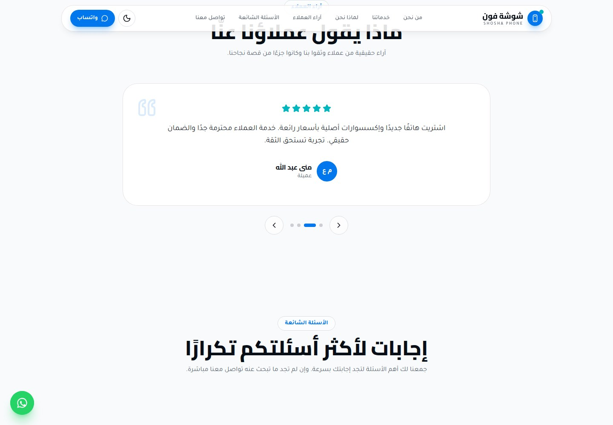
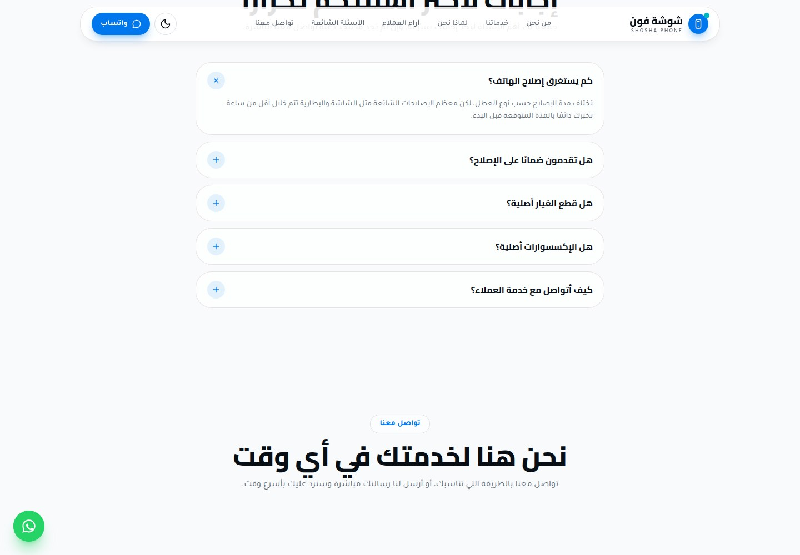
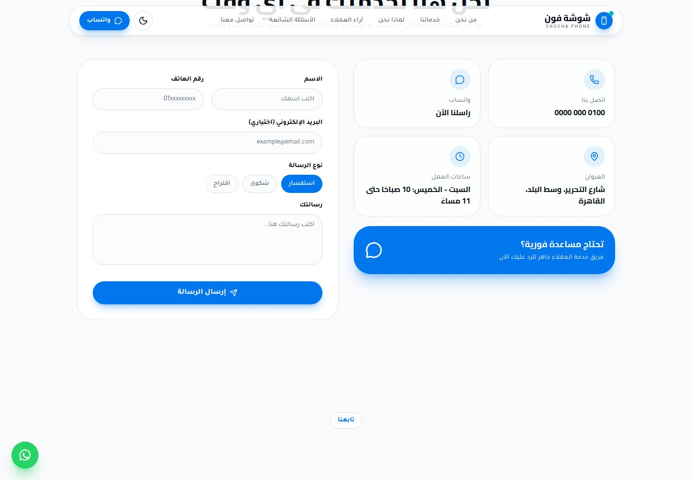
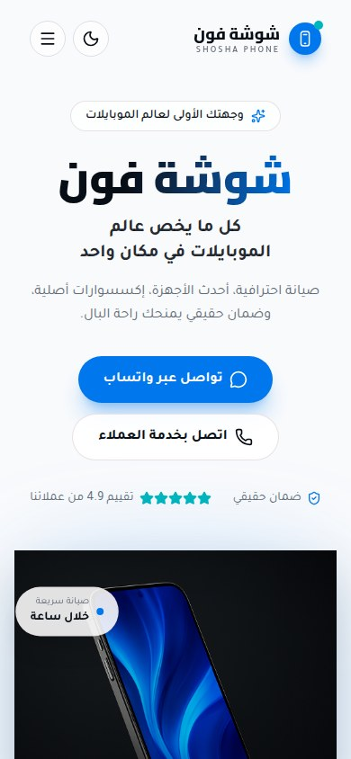
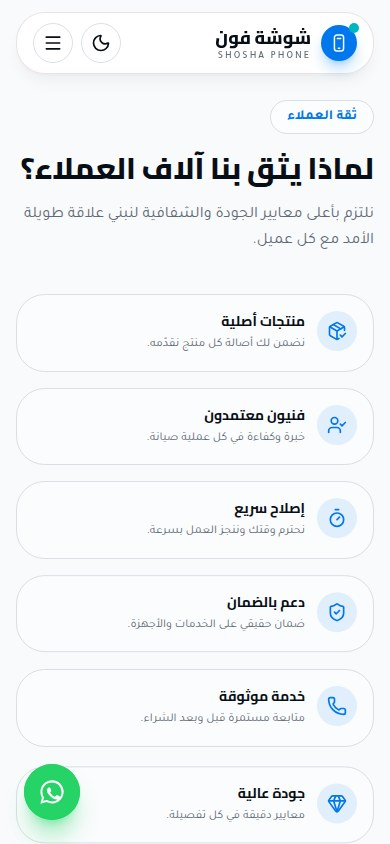
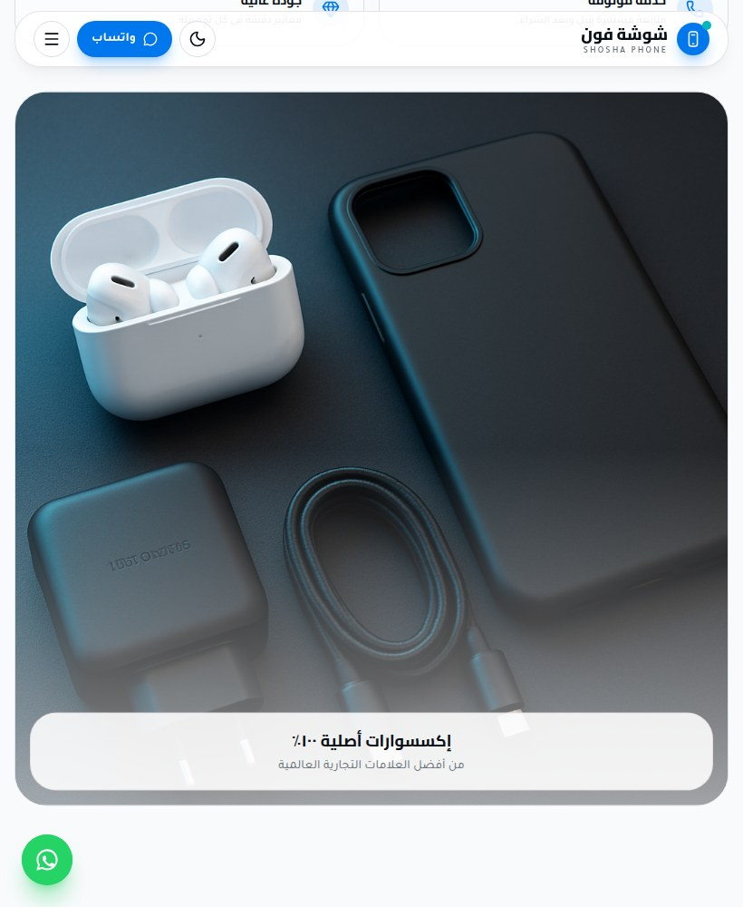

Shosha Phone
Your phone, cared for.

WHAT IT IS
Mobile phone retail and repair shop
An Arabic, right-to-left single-page business site presenting Shosha Phone as a one-stop mobile phone shop for device repair, phone sales, accessories, spare parts, warranties, and customer support. It directs visitors to WhatsApp, phone contact, and an on-page contact form.
This case study documents what the linked website presents. Individual contribution to this project has not been confirmed.
WHAT THE WEBSITE OFFERS
- The hero presents the shop with the tagline ‘Arabic text Arabic text Arabic text Arabic text Arabic text Arabic text Arabic text Arabic text’ (‘Everything mobile in one place’) and visible WhatsApp and telephone calls to action.
- A Services section has four cards: mobile phone repair, phone sales, accessories, and warranties; each has an ‘Arabic text Arabic text’ (‘Request service’) link visibly pointing to a WhatsApp contact URL.
- The About section lists repair, phone sales, accessories, spare parts, warranties, and customer service, and claims more than 10 years of experience.
- The Why Us section presents trust points for original products, certified technicians, fast repair, warranty support, reliable service, and quality.
- The Why Us counters, after loading, displayed 5,000+ customers, 3,000+ repaired devices, 10+ years, and 98% customer satisfaction. These are site claims, not independently verified results.
- A customer-testimonial section shows a review card with a five-star graphic, customer name/initials, and previous/next buttons plus four numbered slide controls.
- An FAQ accordion includes repair-time, repair-warranty, spare-part authenticity, accessory authenticity, and customer-service questions. The visible repair-time answer says common screen and battery repairs are usually under an hour; the expanded warranty answer says coverage may reach 12 months depending on service.
- The Contact section shows phone and WhatsApp cards, a Cairo address, opening hours, and an untouched form with name, phone, optional email, inquiry/complaint/suggestion type choices, message field, and send button.
VISITOR JOURNEY
Use the top navigation to jump among About, Services, Why Us, Testimonials, FAQ, and Contact sections on the same page.
AUTHENTIC SCREEN CAPTURES · 11
Inside the experience.
Genuine, distinct screen captures supplied for this project. No screenshots have been fabricated or duplicated.









